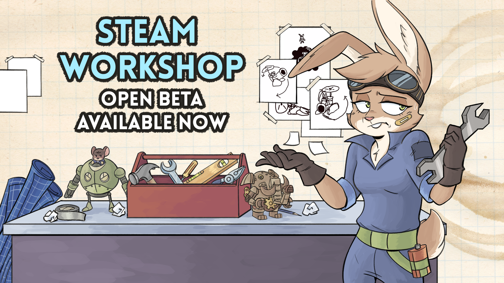
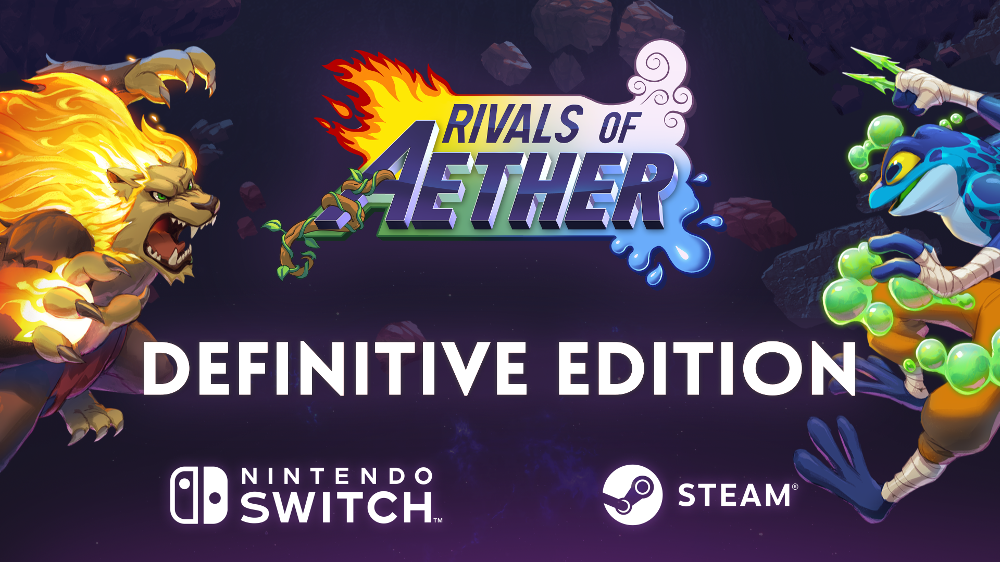

About Rivals of Aether and Development
Rivals of Aether is a fast-paced platform fighter originally released in beta form September 22, 2015, and was developed by Dan Fornace with music composed by Flashygoodness.
Before being released on PC, Rivals of Aether was originally a Microsoft Xbox One exclusive title as the company's answer to Nintendo's hit platform fighter series: "Super Smash Bros."
For Dan, however, Rivals of Aether was meant to encapsulate the best parts of the competitive aspects of Super Smash Bros. Melee. A game which is considered to be the most competitive platform-fighter
Dan implemented many advanced techniques found in Melee and simplified them in Rivals of Aether so that newer players and veterans of the genre would be able to have an easier time maneuvering their characters while still having their own technical idiosyncrasies.
In order to fuel creative side of all players and really increase the replay value of Rivals of Aether outside of the competitive scene, Dan and his team incorporated a mode called "Workshop" in 2019. Workshop effectively allowed any player to create stages, characters, and entire games/setpieces using the base engine running Rivals of Aether. The enormous popularity of Workshop boosted the sales of the game and garnered widespread acclaim for Dan and his team. As of today, there are over 1000+ characters and stages all created by fans since Workshop's release. In 2021, after being impressed by certain characters that were so professionally created, Dan collaborated with Workshop developers to bring four fan created characters into the base game for competitive play.
In September of 2020, Rivals of Aether finally exited the beta phase and was fully released with the moniker of "Definitive Edition." This completed game came with all characters of the base game, Workshop mode enabled by default, and extras including new stages and costumes.
In March of 2021, Dan and his team announced that rollback netcode would be implemented into Rivals of Aether's online infrastructure to create a more seamless matchmaking with online gameplay having less lag and input delay.
As of 2021, the community behind Rivals of Aether is continuously growing with many avid fans of platform fighters advocating for more players to give the game a try and experience how it feels.